Obras de Olívio Jekupé
Sobre
Conheça as obras de Olívio Jekupé reunidas no catálogo, em ordem de lançamento. Pesquise pelo nome do livro ou escolha um período.
24 obras · ordem de lançamento
- LeópolisLeópolis Inesquecível(1993)
InesquecívelCapa não disponível 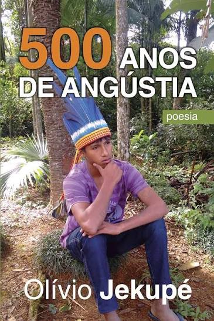
500 anos de angústia(1999)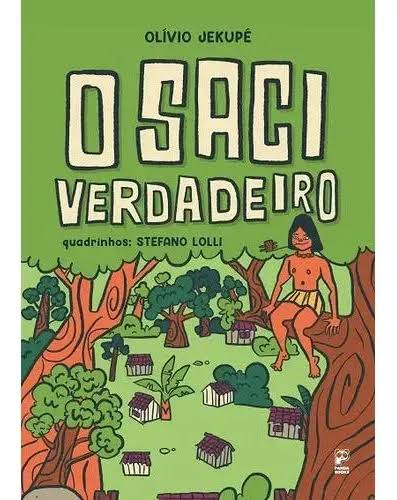
O Saci verdadeiro(2000)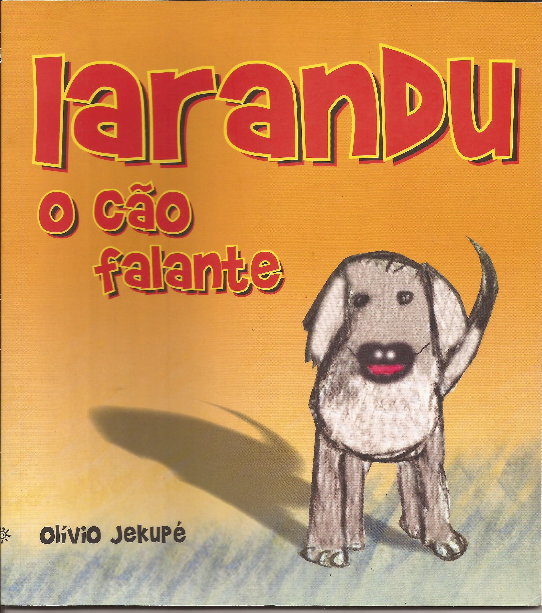
Iarandu, o cão falante(2002)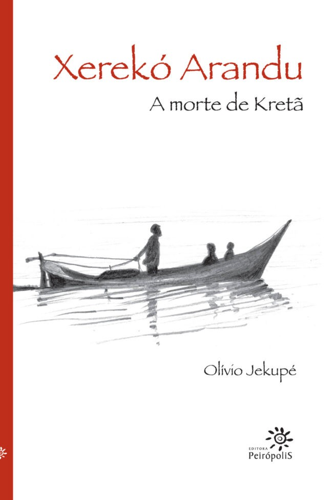
Xerekó Arandu: a morte de Kretã(2002)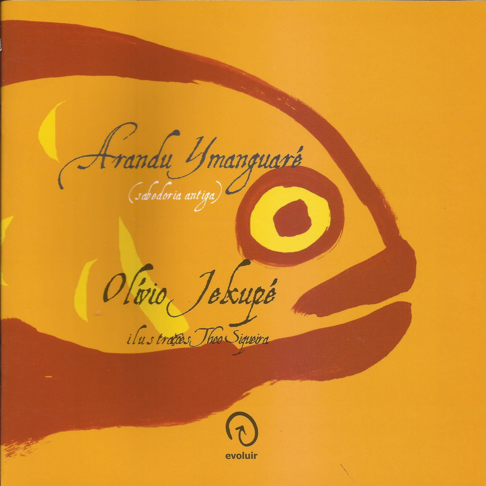
Arandu Ymanguaré: sabedoria antiga(2002)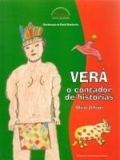
Verá, o contador de histórias(2003)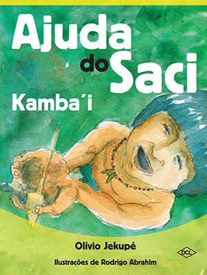
Ajuda do Saci – Kamba’i(2006)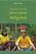
Literatura escrita pelos povos indígenas(2009)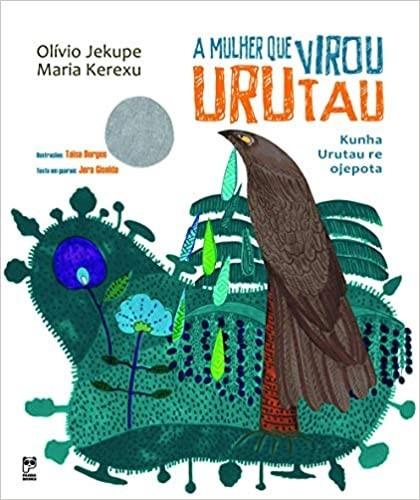
A mulher que virou Urutau(2011)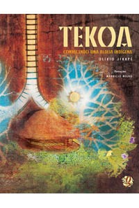
Tekoa: conhecendo uma aldeia indígena(2011)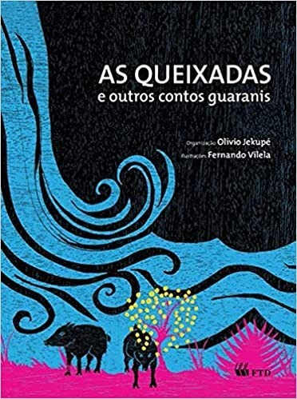
As queixadas e outros contos guaranis(2012)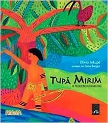
Tupã Mirim: o pequeno guerreiro(2014)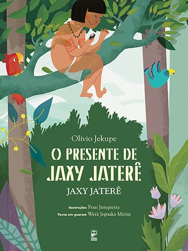
O presente de Jaxy Jaterê(2017)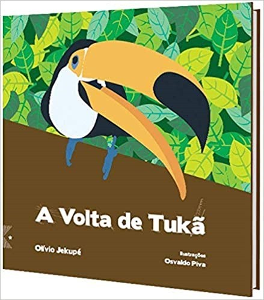
A volta de Tukã(2018)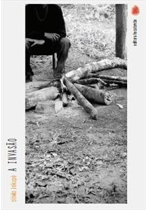
A invasão(2020)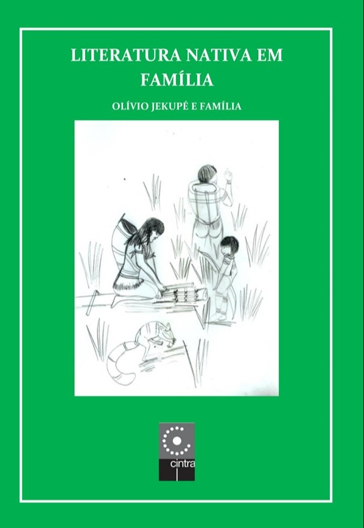
Literatura nativa em família(2020)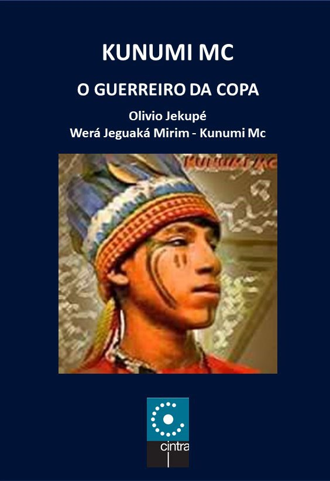
Kunumi MC: o guerreiro da Copa e suas músicas(2021)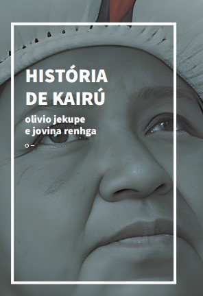
História de Kairú(2022)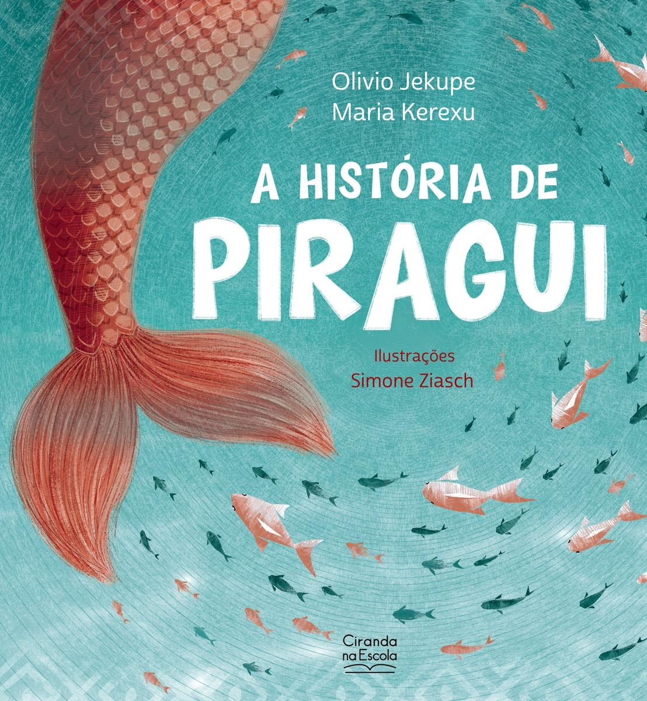
A história de Piragui(2023)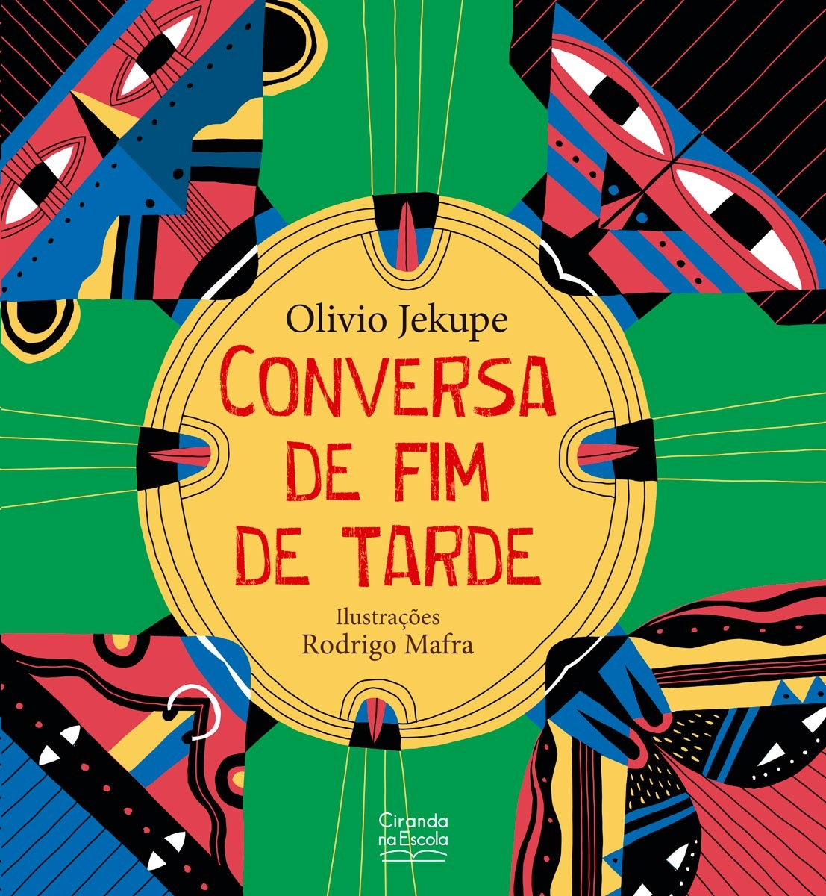
Conversa de fim de tarde(2023)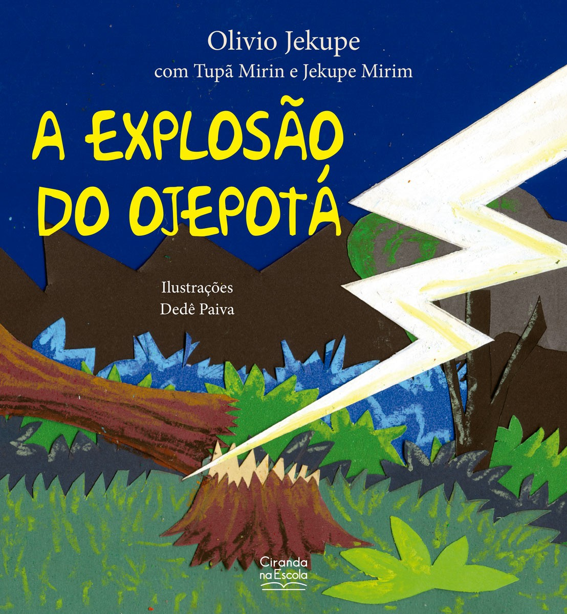
A explosão do Ojepotá(2023)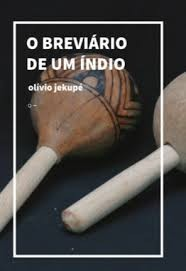
O breviário de um índio(2024)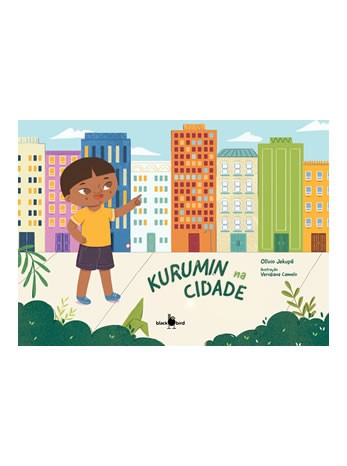
Kurumin na cidade(2025)
Nenhuma obra encontrada. Tente outro título ou outra década.
Esta página reúne os 24 títulos de Olívio Jekupé selecionados para o CBEP. Os anos indicam a primeira publicação de cada obra; as capas apresentadas podem pertencer a edições posteriores.
Ainda não está disponível a capa de Leópolis Inesquecível.